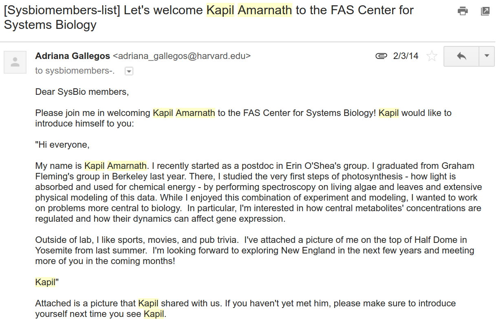
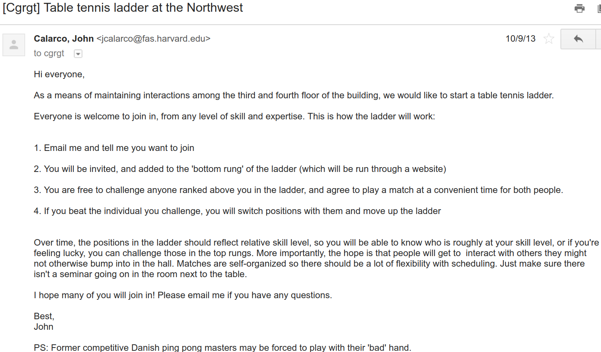

Slack for Basic Sciences Division
- What is Slack?
- How do we use Slack?
- How will trainees benefit from Slack?
- Why use Slack?
What is Slack?
- Modern version of a mailing list
- Access through a browser at https://basicsciencefredhutch.slack.com
- Also available as desktop and mobile phone apps
How do we use Slack?
1/3 Seminar Announcements
2/3 Funding Opportunities
3/3 One-on-one discussion

How will trainees benefit from Slack?
1/3 Seminar Lunch Signups
2/3 New Division Affiliates

3/3 Fun Activities

Why use Slack?
- Less emails
- Reduces repetition
- Division culture is transparent to new affiliates/trainees
In practice
- No change if you prefer just emails
- Test with trainees and affiliates starting August